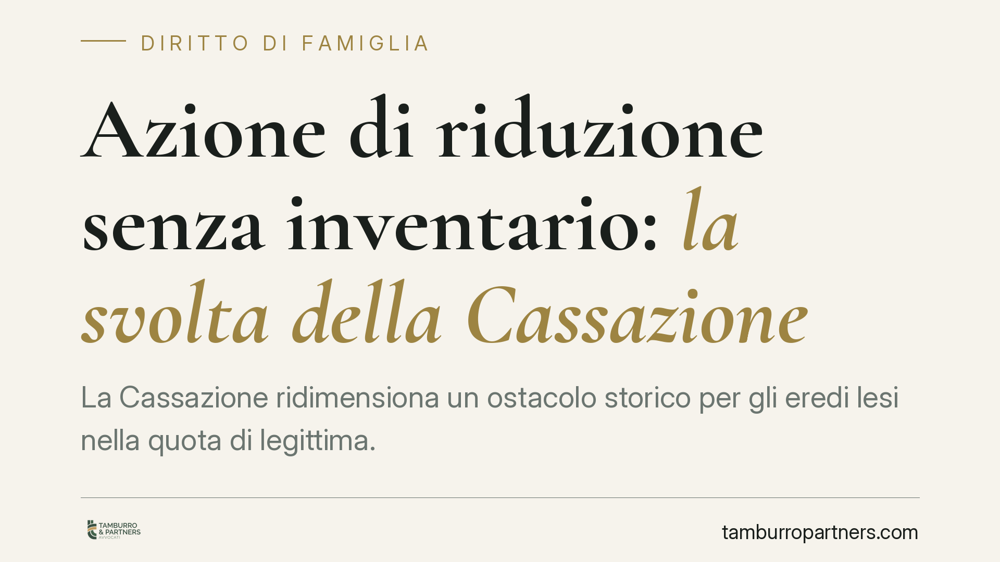

Azione di riduzione senza inventario: la svolta della Cassazione
La Cassazione ridimensiona un ostacolo storico per gli eredi lesi nella quota di legittima. Quando il patrimonio lasciato dal defunto è minimo rispetto alle donazioni fatte in vita, l'onere di redigere l'inventario per agire in riduzione può venire meno. Una pronuncia che semplifica il recupero della quota spettante ai legittimari, spesso bloccati da un adempimento costoso e sproporzionato.

Il caso e la decisione
La questione riguarda l'azione di riduzione, cioè lo strumento con cui gli eredi legittimari (figli, coniuge, ascendenti) recuperano la quota di eredità che la legge riserva loro, quando questa è stata intaccata da donazioni o disposizioni testamentarie fatte dal defunto in vita.
Il problema pratico è noto: per esercitare l'azione contro chi non è coerede, l'erede deve prima accettare l'eredità con beneficio d'inventario e, quindi, redigere l'inventario stesso. Un adempimento formale, che richiede tempo e denaro. La Cassazione ha stabilito che questo onere può considerarsi non dovuto quando il patrimonio residuo del defunto è talmente esiguo da risultare irrilevante rispetto al valore delle donazioni da attaccare.
Inquadramento normativo
Il riferimento è l'articolo 564, comma 1, del Codice civile. La norma subordina l'azione di riduzione proposta dal legittimario che ha accettato l'eredità puramente e semplicemente alla previa accettazione con beneficio d'inventario, ma solo nei confronti dei soggetti che non sono coeredi (donatari e legatari estranei alla successione).
La ratio della disposizione è chiara: l'inventario serve a fotografare l'attivo ereditario, così da calcolare con precisione la lesione della legittima e stabilire su quali beni far valere la pretesa. Ma dove il compendio ereditario è pressoché azzerato — si pensi a conti correnti svuotati o quasi vuoti — l'inventario non fotografa nulla di significativo.
Da qui la lettura offerta dalla giurisprudenza di legittimità: pretendere l'inventario in presenza di un attivo irrilevante significa imporre un adempimento privo di funzione concreta, trasformando una garanzia in un ostacolo. La Cassazione valorizza quindi un'interpretazione orientata allo scopo della norma, e non alla sua applicazione meccanica.
Implicazioni pratiche
Per il legittimario leso, la portata è concreta. Chi si trova di fronte a un'eredità formalmente aperta ma sostanzialmente vuota — perché il defunto ha trasferito in vita beni immobili, quote societarie o liquidità tramite donazioni — potrà agire in riduzione senza dover prima affrontare la procedura di inventario, quando ricorrono i presupposti indicati.
È un vantaggio anzitutto economico e temporale: l'inventario comporta costi notarili o di cancelleria, sopralluoghi, stime, tempi tecnici. Rimuovere questo passaggio, dove il patrimonio è minimo, riduce le barriere di accesso alla tutela.
Attenzione però: non si tratta di un'abolizione generalizzata dell'obbligo. L'esonero opera solo quando l'attivo ereditario è oggettivamente irrilevante rispetto alle donazioni contestate. Dove il patrimonio residuo abbia un valore apprezzabile, l'inventario resta necessario. La valutazione della soglia di irrilevanza è caso per caso e richiede un'analisi accurata dei rapporti tra donazioni e asse ereditario.
Resta inoltre invariato il termine di prescrizione decennale per l'azione di riduzione e la necessità di provare la lesione della quota riservata.
Cosa fare in concreto
- Ricostruisci l'asse ereditario. Verifica il valore effettivo di ciò che il defunto ha lasciato: conti, immobili, titoli. È il primo dato per capire se il patrimonio residuo sia davvero minimo.
- Mappa le donazioni in vita. Raccogli atti notarili, bonifici, trasferimenti immobiliari e ogni liberalità che possa aver eroso la tua quota di legittima.
- Verifica i termini. L'azione di riduzione si prescrive in dieci anni: individua con precisione il momento da cui decorre il termine per non perdere il diritto.
- Valuta la strategia processuale. Consigliamo di sottoporre la situazione a un professionista prima di scegliere tra accettazione semplice, beneficio d'inventario o azione diretta, perché l'errore iniziale può compromettere l'intera pretesa.
- Documenta lo svuotamento. Se sospetti che i conti siano stati prelevati prima o dopo il decesso, raccogli estratti conto e movimentazioni: possono fondare ulteriori azioni di recupero.
La pronuncia segna un allineamento tra forma e sostanza. Ma proprio perché fondata su una valutazione di irrilevanza del patrimonio, richiede una lettura attenta dei numeri prima di decidere come muoversi.
---
*Contributo informativo a cura di Tamburro & Partners - Avv. Giuseppe Tamburro. Non costituisce parere legale.*
Ogni famiglia ha il suo equilibrio.
Separazione, divorzio, affidamento, assegno: se vuoi un confronto riservato su una specifica situazione, scrivi allo studio. Ti rispondiamo entro un giorno lavorativo.